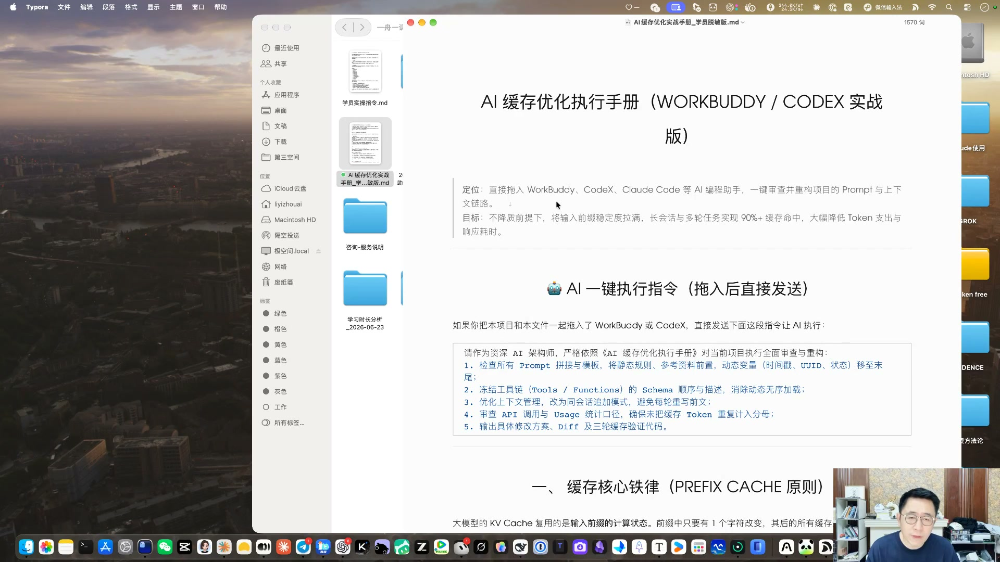
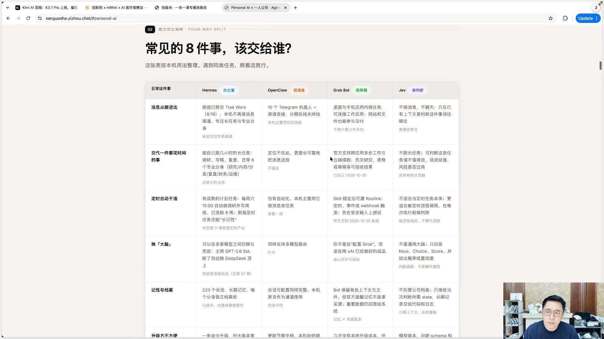

一舟一课 3.0 · 第四十八课
这节课是《知识库与一人创意团队》三连课的开篇。后两节课（第 49、50 课）一秒闪过的那十五页基础课件，全是在这九十四分钟里一页页拆透的。
整场课讲了四件能直接抄作业的实操。先用五个文件夹和三份旧资料把知识库跑起来，告别“只收藏不干活”；再拿十一月六号那篇“美国拟立法暂停先进 AI、违规判二十年”的刷屏热文当靶子，教怎么追到美国国会法案原文，看穿“提案不等于法律”；接着把自家的省钱账本翻开，看怎么把缓存命中率干到 99.49%，六个钟头跑三点九亿字只花十三块四，外加本机装下 184.9G 免费视频模型每晚通宵产片；最后亮出他亲手改口播稿的八条刀法，以及四套助手（Hermes、OpenClaw、Grok Bot、Jev）的八件事分工表。
很多人花几个礼拜往知识库里塞几百篇公众号和 PDF，最后变成一个自己再也不会打开的收藏夹。他开场前十页课件给了一套极简的起手式：先别贪多，建五个文件夹、放三份旧稿，直接拿今天要干的活开练。
为什么同样一个问题，AI 给别人的回答像水货，给你的像专家？他说差距根本不在模型，而在你有没有喂原始资料。别对 AI 说“请模仿我的语气写一篇分析”，而是直接扔三份你过去写过的旧稿，下死命令：先引用原文再回答；原文没有依据的地方直接标“需要我补充”，严禁自己编造。
他把“知识库”和“记忆”分得很清楚。知识库只管“找得到”，记忆才管“接着想”。每次聊完天不能关掉窗口就走，收尾时必须做一步“资产化”，把有用的资料、人拍板确认过的结论、下次还能复用的步骤存下来。这里有一条铁律：先由人确认，再保存入库，绝不能让 AI 把它自己猜的胡话直接写进档案。
他的“知识宫殿”只分三样东西，全部用最普通的本地文本文件夹管理：
知识宫殿三类资产与五目录模板
1. 长期认知：经过你本人核实、未来半年都成立的行业判断与方法论。
2. 当前工作（当前工作.md）：这周正在干的目标、已完成项、下一步计划和待确认问题。每次换模型（比如从 Carbon 切到 Argon，或者从 Opus 切到 Kimi）之前，先让旧模型更新这份文件；新模型上来第一件事先读它和 索引.md，一秒无缝接班，不用重搭项目。
3. 项目证据：一手原文、原始链接、带日期的截图。原始资料永远只读、绝不直接覆盖修改。
新手建库五目录：建一个“知识库入门课”总文件夹，下面只设 01-原始资料、02-整理笔记、03-做法Skills、04-当前成果、05-项目进度 五个子目录，先放 3 份脱敏后的核心材料（1 篇旧口播代表作＋1 份商业思考＋1 次项目复盘，写清日期与出处）就能开工。
十一月六号，中文圈刷屏了一篇爆文《这可能是美国 AI 最魔幻的一天》，把“纳指与半导体盘中大跌”“美国议员提案暂停先进 AI、违规判二十年”“弗吉尼亚州居民抗议数据中心抢水抢电”揉在一起，看得人以为美国 AI 泡沫马上要破、政府要一刀切叫停了。他在课上演示了怎么带着知识库，把这篇二手热文一层层剥回一手事实。
第一层，顺着文章里的截图，让 AI 直接去美国政府出版局抓一手文本 H.R.10538（2026 年 9 月 24 日提出，重点核对 Sec.3 / 8 / 9 / 13）。原文读下来，三条核心条款是这样的：一是它不按模型名字划线，而是按训练算力门槛（大于等于 10 的 25 次方次整数或浮点运算）划线，而且阈值每年调整；二是拟暂停先进 AI 的训练、微调与部署，直到监管部门和规则到位；三是针对特定决策者或鲁莽违规者（rogue actor），最高刑期确实写到了 20 年，相关知识产权与资产也可能被没收。
但最要命的事实边界在法案右侧的状态栏：当前状态清清楚楚标着 Introduced（已提出）。他在课件上连画了三个不等号：已提出 ≠ 已通过 ≠ 已签署 ≠ 已生效。任何自媒体写成“美国已经全面暂停 AI”，都是在拿刚递交的提案当生效法律吓唬外行。
第二层，看清 AI 扩张必须过的“四道现实关”。模型能力只是理论上限，真正决定能走多快的是四道物理与社会关卡：钱（资本开支），芯片、园区、输电和运维都要长期资本，融资变贵计划就得重算；芯片（设备供给），GPU 只是开始，还要高速网络、存储和服务器配套，一处受限就得排队；土地（社区许可），选址牵涉补贴、就业、噪声、抢水与社区态度，拿到地不等于拿到居民支持；电（能源约束），不仅要有电，还要电网接得上、电价扛得住、散热跟得上。任何把“计划投资几千亿”直接写成“已经建成”的报道，都经不起推敲。
第三层，算清“同一个数据中心，谁拿走收益、谁收到账单”。他把四方利益拉成了一张对照表：科技公司拿走模型能力、云收入和垄断优势，怕的是建设成本失控和监管叫停；华尔街投资者拿走增长预期和产业链升值，怕的是扩张不及预期、估值重定价；当地居民拿到一点就业和税收，收到的却是电费暴涨、水土被挤占的真实账单；普通上班族拿到一点效率工具，但降本增效的收益归了公司，被裁员替代的焦虑却先落到自己头上。喊“美国 AI 出大事了”只是标题党；问出“技术跑得这么快，为什么红利传递的速度赶不上账单落地的速度？普通人怎么把省下的时间变成新收入？”，才是能接上历史知识库的好题。
一人公司靠多 Agent 二十四小时连轴转，最怕月底收到天价账单。这节课他第一次把团队省钱的两套看家本领亮了底：云端靠“前缀缓存”，本地靠 Mac Studio 通宵白嫖。
他当场切到 Codex 的后台账单：团队用 DeepSeek 连续跑了 6 小时、672 次请求，累计吞吐高达 3.9 亿 Prompt Token，结果因为缓存命中率保持在 99.42%–99.49%，实际只花了 13.4 元人民币（账户余额还剩 88.96 元）。
数字对比 · 6 小时跑 3.9 亿字（672 次请求）怎么省下九成钱
大模型缓存（KV Cache）复用的是输入前缀的计算状态。只要开头第 1 个字符变了（比如塞了当前时间或打乱了工具顺序），后面几万字缓存就会全部失效重算。
为了让所有项目都能拿到 90% 以上的缓存命中，他做了一份《AI 缓存优化执行手册（WorkBuddy / Codex 实战版）》，直接拖进编程助手里让 AI 照着改代码。手册里的五条铁律是：第一，静态规则和参考资料全部前置，时间戳、UUID、状态等动态变量统统挪到最末尾；第二，冻结工具链（Tools / Functions）的顺序与描述，消除动态无序加载；第三，上下文改为会话追加模式，绝不每轮重写前文；第四，核查统计口径，别把缓存 Token 重复算进分母；第五，输出修改 Diff 与三轮缓存验证代码。

云端省了文字钱，视频 B-roll 和插画如果全走云端还是贵。他点开那台顶配 Mac Studio 的本地 models 文件夹给人看，里面常驻三个主力模型，合计约 184.9 GB：一是 MiniMax-H3（144 GB），用 h3.c 原生 Metal 方案编译，通过 1,768 项无模型自检，专门啃高画质文生视频与首尾帧控制（官方许可排除了美、欧、英、韩，中国大陆可合规本地部署）；二是 LTX-2.3-MLX-Q8（29.75 GB），快速迭代主力，实测生成一条 5 秒双帧视频只要 58.33 秒，峰值内存占用 27.10 GiB；三是 Gemma-3-12B-MLX-4bit（8.07 GB）。旁边还测过 Wan2.1-14B（184.9G）、HunyuanVideo（144G）、Mochi-1（96.5G）、OpenSora-1.2（38.6G）、CogVideoX-5B（16.2G）。
他们测商品视频时踩出一个很实在的经验：纯文字让 LTX 生成耳机容易出现结构变形，但“先拿商品实拍图或 Image2 生成首尾帧定型，再让本地模型做图生视频动镜头”，外形稳得多。为此他立了一份《本地视频优化项目计划书 v1》，每晚 21:00 到次日 05:00 自动跑：21:00–21:30 从爆款原创脚本库（工作日）或短剧分镜库（周末）挑 1 个真实案例，拆成 4–6 张镜头卡（写清用途、主体、唯一动作、相机行为、固定关系、失败条件）；21:30 起先用 Image2 生首尾帧，再串行跑本地 LTX 和 H3。最狠的是审片规矩：以前审片只抽三张截图就敢打通过，现在强制改成全帧序列审片——把每一帧都抽出来按时间顺序查，六维评分和硬失败原因分开存，绝不把“文件生成成功”当成“画面可用”。
后半场六十五分钟往后，他在演示选题会和内部网站时，连续亮出了几份平时不外传的团队工程底稿。
第一份是他亲自改完《造神之后》口播稿后，直接写进团队唯一正本（original-longform-video-copy v3.19）的八条精简刀法：
一舟亲改口播稿八条刀法（v3.19 正本）
1. 砍个人情绪前戏，第一句直接砸财富冲击＋接地气外号：删掉“昨天看了一条新闻愣了好几分钟”，第一句直接砸“人类最大 IPO 要来了！这就是 Claude 的母公司 Anthropic”。
2. 砍技术演示过程，只留核心动作和结果数字：别啰嗦“点开电脑网页几秒弹出计算器”，直接写“几秒钟扫出全部高危漏洞”。
3. 用单句反问替掉说教：删掉铺垫，直接问：“那我就问你一个问题：你今天早上都干了什么？……你管它叫：星期二。”
4. 主次分明，核心金句独立成段加粗：砍光次要理论铺垫，直接杀出最狠的一句（如“它最可怕的地方，不是恨你，它是根本不在乎你。”）。
5. 案例讲完即收：讲到“他们只是机器被教坏了”立刻切下一幕，删掉后面“你现在再回看”的尾巴。
6. 保留带时间码和语气提示的分幕头：大模块用 ---- 分割，保留 【开篇｜0:00-0:30】语音语块，剧情铺垫，删掉首尾 meta 说明与金句表。
7. 呼吸排版：每段严格 1–2 句短句，核心句单独成段加粗。
8. 文末 10 秒极简 CTA，砍光所有尾巴：删掉“今天留个小作业、两本书放评论区了”，全文最后一句落地后统一接：“更多商业思考和 AI 用法，我们在直播间深度聊，点击下方的预约按钮，咱们不见不散！”
第二份是 WorkBuddy 里的“换赛道抓民生主粮”。当发现 AI、科技、金融离普通人太远时，他直接用语音下令：避开科技金融，专抓最近 6–12 小时内抖音、知乎、微博上关于婚丧嫁娶、家庭民生、买房租房、孩子教育、生命健康、职场饭碗的 20 个热点，按 P0 / P1 / P2 分级并用 0–100 分打分。当场跑出来的 C 组职场主粮里，排第一的是 86 分的《00 后辞去月薪 3 万转行当护工：白领光环碎了之后，未来什么饭碗才真正值钱？》（切中写 PPT 的白领 vs 无法被代码替代的实体接触服务价值重估），排第二的是 82 分的《AI 时代简历最失败的不是学历，而是无法验收的“我会”》。
第三份是内部站 sanguosha.yizhou.chat 上的《四种工具，常见的 8 件事该交给谁？》。他把团队同时在跑的四套 Agent 工具按日常八件事拉了一张矩阵表，原则就一句：不用争谁最强，你已有的工作流不必全换，缺哪一段就补哪一段。

四套工具在他们本机上的真实分工是这样的：Hermes（坐镇办公室的总管）攒了 223 个历史会话，带 6 个专业分身（研究、内容、分发、复盘、财务、运维），专跑几小时的长任务，每周六 15:00 自动做调研写周报已经连跑 8 周，主脑用 GPT-5.6 Sol，断了自动切 DeepSeek 顶上（微信通道已在 8 月 19 日移交 Trae Work）；OpenClaw（守在前台的通讯员）管着 10 个 Telegram 机器人长期在线，专职收发消息；Grok Bot（跑外勤的草稿员）在桌面和手机端接活，跨应用做研究、拉表格、交第一版可验收草稿，跑稳的 Skill 可以设成 Routine 定时触发；Jev（派单前的冷静守门员）不接消息也不聊天，只接收当次状态，专门输出 Noul / Choice / Score 三个判断原语和置信度，在定时流程动手前判断这件活值不值得派、该派给谁、风险高不高。
最后十分钟他还顺手点开了三个自建内部站：一是《Rx 创新药 × mRNA × AI 医疗观察站 v1.1》，设成每 3 天自动循环更新（3-DAY LOOP），追踪个体化癌症 mRNA 疗法 V940 三期双终点与 AI 蛋白设计，按 L1 原料卖水人、L2 递送、L3 设备、L4 CRO/CDMO、L5 平台、L6 临床资产六层拆解，专门立了“防混淆清单”和“证据边界”（提醒有产品线不等于拿到订单）；二是《技能舟 SkillBoat（~/yizhou-skills）》，把自动发小红书、公众号全流程自动化、视频号分析、短视频脚本工坊、知识宫殿等全部封成一键可下载（$ 下载 --pack）的技能包；三是《斩杀线之下，大模型按任务选》，坚持“三周更新：先换候选，再换生产主力”的换模型纪律。
防胡编（先引原文） 请先完整阅读我放入项目的这 3 份原始资料。回答我的问题时，必须遵守以下规则：1. 先逐条引用原始资料中的原话与出处，再给出你的分析与建议；2. 严格区分“原文已有的事实”、“我过去的判断”与“你本次的推导”；3. 凡是原始资料中没有依据、需要最新外部数据或我个人拍板的内容，一律明确标注“【需要补充】”，严禁自行编造。法案/政策五栏核查 只读法案/政策一手原文（如 H.R.10538），按“定义（门槛划线）、暂停/限制范围、审批与豁免条件、处罚对象与上限、当前法律状态（已提出/已通过/已生效）”五栏整理。每项必须附上原文条款号（Sec.）；严格把“提案拟做什么”和“现在已经发生什么”分开，原文找不到的内容一律写“未核实”，不引用二手自媒体转述。AI 缓存优化重构 请作为资深 AI 架构师，严格依照《AI 缓存优化执行手册》对当前项目执行全面审查与重构：1. 检查所有 Prompt 拼接与模板，将静态规则、参考资料前置，动态变量（时间戳、UUID、状态）移至末尾；2. 冻结工具链（Tools / Functions）的 Schema 顺序与描述，消除动态无序加载；3. 优化上下文管理，改为会话追加模式，避免每轮重写前文；4. 审查 API 调用与 Usage 统计口径，确保未把缓存 Token 重复计入分母；5. 输出具体修改方案、Diff 及三轮缓存验证代码。抓 6–12 小时民生热点 不要聚焦在 AI、科技、金融这些离普通人太远的话题。去翻抖音、知乎、微博各大热榜，只留最近 6 小时（最多不超过 12 小时）内发生的民生热点——重点看婚丧嫁娶、家庭民生、买房租房、孩子教育、生命健康、职场饭碗，或者能让人产生强烈情绪共鸣的事。先帮我筛出 20 个选题，按优先级划分为 P0、P1、P2：1. 把每个热点列出来，用一句话讲透核心价值和爆点（把爆点加粗）；2. 按 0 到 100 分给这 20 个选题逐一打分。00:50 知识库冷启动：为什么喂三份旧原文比背提示词管用，以及知识宫殿三分法08:00 拆解 11 月 6 日《这可能是美国 AI 最魔幻的一天》，区分市场定价、监管提案与居民账单26:35 逐条核对美国国会法案 H.R.10538 原文：10 的 25 次方算力门槛、20 年刑期与 Introduced 状态32:35 AI 扩张的四道现实关（钱、芯片、土地、电）39:10 Codex 真实账单：6 小时 672 次请求、3.9 亿 Token 仅花 13.4 元，缓存命中率 99.49%41:25 《AI 缓存优化执行手册》五条重构铁律54:00 Mac Studio 本地 184.9G 视频模型目录（MiniMax-H3 与 LTX-2.3）及每晚 21:00–05:00 全帧审片62:15 四方利益分配表与《一舟亲改〈造神之后〉口播稿八条刀法》79:50 WorkBuddy 换赛道抓 6–12 小时民生共鸣热点 20 选（00 后辞月薪 3 万当护工 86 分）82:15 创新药 × mRNA 观察站、技能舟 SkillBoat 与三国杀四工具八件事分工矩阵笔记里的观点、判断和数字都出自讲课人，不代表整理者的看法。语音转写把几处专有名词听岔了，比如 H.R.10538 听成“HR10538号”、MiniMax-H3 听成“M3”、Gemma 听成“JAMA”、OpenClaw 听成“OpenCloud”，文里已经全部对照屏幕上的原字核准改回。
课上展示的本地视频模型方案（184.9G 权重）跑在一台高配 Mac Studio 上；普通笔记本内存不够大，照搬他的云端前缀缓存优化和知识库文件夹结构最划算。